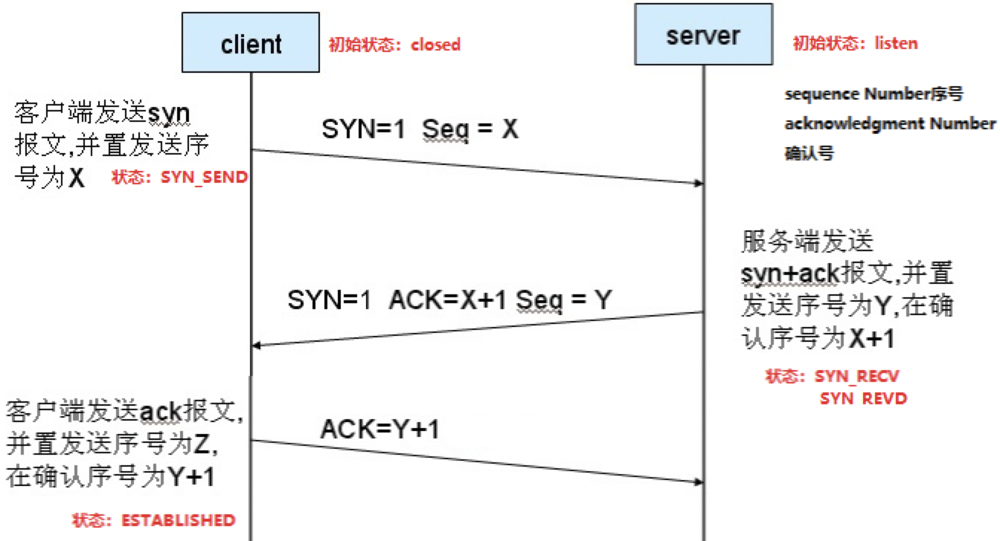

前端角度
常见的URL是这样的www.baidu.com, 其实域名有三部分组成：协议名、域名、端口号，一般来说端口是默认隐藏的，除此之外还会包含一些路径、查询和其他字段；
那么从输入url到页面加载完成发生了什么呢？我的简单理解可以大致总结来说这几点：
- 地址栏输入url并按下回车键；
- 浏览器查找当前url的DNS缓存记录，并比较缓存是否过期；
- DNS解析url的的对应IP；
- 根据IP建立TCP连接（三次握手）；
- HTTP发起请求；
- 服务器处理请求，浏览器接收HTTP响应；
- 页面渲染，构建DOM树；
- 关闭TCP连接；（四次握手）
DNS域名解析
域名解析的过程实际就是将域名还原为IP地址的过程，因为我们知道地址栏输入的域名并不是最后资源真实所在位置，域名只是 IP地址的一个映射。
- 浏览器会检查缓存中有没有域名对应的ip地址，如果有就调用这个IP地址的映射，完成域名解析。
- 如果没有找到则会查找本地DNS解析器缓存(操作系统的hosts文件)，如果查找到则返回。
- 如果还是没有找到那么就会根据向本机配置的本地区DNS域名服务器（
LDNS）发起请求，如果查找到则返回。如果你是通过学校连接互联网的一般是你学校的DNS服务器，如果你是在小区连接互联网的一般是网络提供商比如电信，联通的DNS服务器，DNS服务器通常不会太远。如何查看本机的域名服务器，在Linux可以通过 cat /etc/resolv.conf查看。到这一步基本能解析80%的域名。
- 如果LDNS也不能解析，最后递归查询，按照本地域名服务器→根域名服务器→顶级域名服务器→权威域名服务器对应网址的解析过程就是：.->.com ->baidu.com.->www.baidu.com
TCP连接+HTTP请求
通过DNS域名解析之后，获取到服务器的IP地址，开始建立一次连接，这是由TCP协议完成，主要通过三次握手进行连接；
SYN (synchronize)是请求同步的意思，ACK是确认同步的意思。 Sequence:次序
- 第一次握手：建立连接，送连接请求。客户端发送syn包（syn=j）到服务器，并进入SYN_SENT状态，等待服务器确认；
- 第二次握手：服务器收到SYN报文段。服务器收到syn包，必须确认客户的SYN（ack=j+1），同时自己也发送一个SYN包（syn=k），即SYN+ACK包，此时服务器进入SYN_RECV状态；
- 第三次握手：客户端收到服务器的SYN+ACK包，向服务器发送确认包ACK(ack=k+1），此包发送完毕，客户端和服务器进入ESTABLISHED（TCP连接成功）状态，完成三次握手。
完成三次握手，客户端与服务器开始传输数据。

HTTP请求主要发生在客户端，这部分又可以称为前端工程师眼中的HTTP，发送HTTP请求的过程就是构建HTTP请求报文并通过TCP协议发到服务器指定端口（HTTP协议80/8080，HTTPS协议443）。报文由三部分组成：请求行，请求头，请求实体。
浏览器接收响应
服务器在收到浏览器发送的HTTP请求之后，会将收到的HTTP报文封装成HTTP的Request对象，并通过不同的Web服务器进行处理，处理完的结果以HTTP的Response对象返回，主要包括状态码，响应头，响应报文三个部分。
状态码主要包括以下部分
1xx：指示信息–表示请求已接收，继续处理。
2xx：成功–表示请求已被成功接收、理解、接受。
3xx：重定向–要完成请求必须进行更进一步的操作。
4xx：客户端错误–请求有语法错误或请求无法实现。
5xx：服务器端错误–服务器未能实现合法的请求。
响应头主要由Cache-Control、 Connection、Date、Pragma等组成。
响应体为服务器返回给浏览器的信息，主要由HTML，css，js，图片文件组成。
浏览器渲染页面
HTTP状态码分类
| 状态码 | 描述 | 英文名 |
|---|---|---|
| 200 （成功） | 服务器已成功处理了请求。 通常，这表示服务器提供了请求的网页。一般用于GET与POST请求 | OK |
| 201（已创建） | 请求成功并且创建了新的资源 | Created |
| 202（已接受） | 服务器已经接受请求，但是未完成处理 | Accepted |
| 203（非授权信息） | 服务器已成功处理了请求，但返回的meta信息不在原始的服务器，而是一个副本 | Non-Authoritative Information |
| 204 （无内容） | 服务器成功处理了请求，但没有返回任何内容 | No Content |
| 205（重置内容） | 服务器成功处理了请求，但没有返回任何内容。在未更新网页的情况下，可确保浏览器继续显示当前文档 | Reset Content |
| 206（部分内容) | 服务器成功处理了部分 GET 请求 | Partial Content |
| 状态码 | 描述 | 英文名 |
|---|---|---|
| 300（多种选择） | 针对请求，服务器可执行多种操作。 服务器可根据请求者 (user agent) 选择一项操作，或提供操作列表供请求者选择。 | Multiple Choices |
| 301 （永久移动） | 请求的网页已永久移动到新位置。 请求的资源已被永久的移动到新URI，返回信息会包括新的URI，浏览器会自动定向到新URI。，今后任何新的请求都应使用新的URI代替 | Moved Permanently |
| 302（临时移动） | 服务器目前从不同位置的网页响应请求，但请求者应继续使用原来url来进行以后的请求。 | Found |
| 303（查看其他位置） | 查看其它地址。与301类似。使用GET和POST请求查看See Other304（未修改）未修改。所请求的资源未修改，服务器返回此状态码时，不会返回任何资源。客户端通常会缓存访问过的资源，通过提供一个头信息指出客户端希望只返回在指定日期之后修改的资源 | Not Modified |
| 305（使用代理） | 请求者只能使用代理访问请求的网页。 如果服务器返回此响应，还表示请求者应使用代理。 | Use Proxy |
| 307（临时重定向） | 服务器目前从不同位置的网页响应请求，但请求者应继续使用原有位置来进行以后的请求。 | Temporary Redirect |
| 状态码 | 描述 | 英文名 |
|---|---|---|
| 400 （错误请求） | 客户端请求的语法错误，服务器无法理解 | Bad Request |
| 401 （未授权） | 请求要求用户的身份认证。 对于需要登录的网页，服务器可能返回此响应。 | Unauthorized |
| 403 （禁止） | 服务器理解请求客户端的请求，但服务器拒绝请求。 | Forbidden |
| 404 （未找到） | 服务器无法根据客户端的请求找到资源（网页）。通过此代码，网站设计人员可设置”您所请求的资源无法找到”的个性页面 | Not Found |
| 405 （方法禁用） | 客户端请求中的方法被禁止 | Method Not Allowed |
| 406 （不接受） | 服务器无法根据客户端请求的内容特性完成请求 | Not Acceptable |
| 407 （需要代理授权） | 此状态代码与 401（未授权）类似，但指定请求者应当授权使用代理 | Proxy Authentication Required |
| 408 （请求超时） | 服务器等待客户端发送的请求时间过长，超时 | Request Time-out |
| 409 （冲突） | 服务器完成客户端的 PUT 请求时可能返回此代码，服务器处理请求时发生了冲突 | Conflict |
| 410 （已删除） | 客户端请求的资源已经不存在。410不同于404，如果资源以前有现在被永久删除了可使用410代码，网站设计人员可通过301代码指定资源的新位置Gone411 （需要有效长度）服务器不接受不含有效内容长度标头字段的请求。 | Length Required |
| 412 （未满足前提条件） | 服务器未满足请求者在请求中设置的其中一个前提条件。 | Precondition Failed |
| 413 （请求实体过大） | 由于请求的实体过大，服务器无法处理，因此拒绝请求。为防止客户端的连续请求，服务器可能会关闭连接。如果只是服务器暂时无法处理，则会包含一个Retry-After的响应信息 | Request Entity Too Large |
| 414 （请求的 URI 过长） | 请求的URI过长（URI通常为网址），服务器无法处理 | Request-URI Too Large |
| 415 （不支持的媒体类型） | 请求的格式不受请求页面的支持。 | Unsupported Media Type |
| 416 （请求范围不符合要求） | 如果页面无法提供请求的范围，则服务器会返回此状态代码。 | Requested range not satisfiable |
| 417 （未满足期望值） | 服务器未满足”期望”请求标头字段的要求。 | Expectation Failed |
| 状态码 | 描述 | 英文名 |
|---|---|---|
| 500（服务器内部错误） | 服务器内部错误，无法完成请求 | Internal Server Error |
| 501（尚未实施） | 服务器不支持请求的功能，无法完成请求 | Not Implemented |
| 502（错误网关） | 作为网关或者代理工作的服务器尝试执行请求时，从远程服务器接收到了一个无效的响应。 例如，服务器无法识别请求方法时可能会返回此代码。 | Bad Gateway |
| 503（服务不可用） | 服务器目前无法使用（由于超载或停机维护）。 通常，这只是暂时状态。 | Service Unavailable |
| 504（网关超时） | 服务器作为网关或代理，但是没有及时从上游服务器收到请求。 | Gateway Time-out |
| 505（HTTP 版本不受支持） | 服务器不支持请求中所用的 HTTP 协议版本。 | HTTP Version not supported |